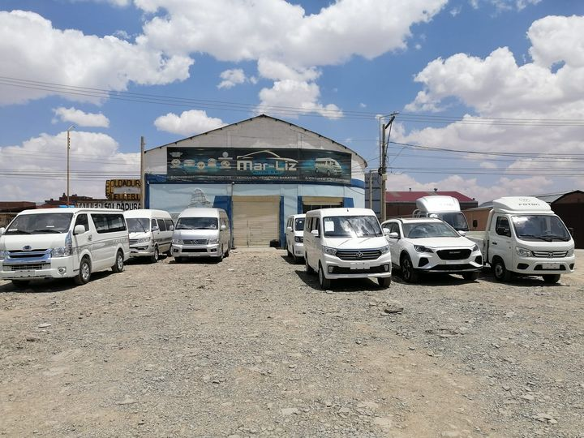
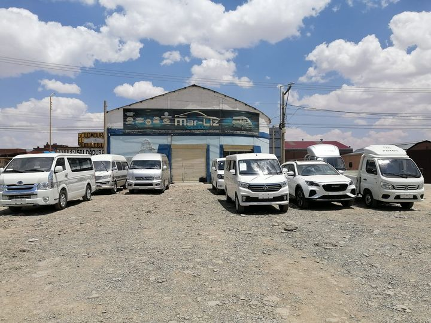

MAR-LIZ AUTOS SRL es una empresa del rubro automotriz que brinda servicios de comercialización, mantenimiento, venta de partes y accesorios de vehículos automotores en la ciudad de Oruro, contamos con el personal más competente y comprometido con el servicio de calidad y excelencia.
Ser una empresa líder en el sector automotor de la ciudad de Oruro, reconocidos a nivel nacional por el servicio que brindamos de calidad y excelencia, logrando la satisfacción de nuestros clientes.
En MAR-LIZ AUTOS S.R.L, nuestra historia es un legado de compromisos constantes con la excelencia. Explora nuestra amplia gama de vehículos
 
